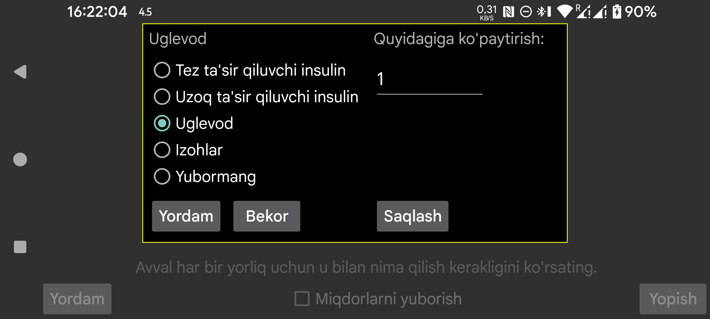

Libreview dagidek, Juggluco ichidagi Nightscout yoki veb server interfeysi orqali miqdorlar qanday ko‘rinishda berilishini ham shu yerda belgilash mumkin.
Bu sahifada Juggluco da ma’lum bir yorliq ostida kiritilgan miqdorlar Libreview yoki Nightscout tomoniga qanday tur sifatida yuborilishini tanlaysiz. Bir xil tashqi turga bir nechta Juggluco yorliqlarini bog‘lash ham mumkin. Masalan, uglevod va sof glyukozali ovqat uchun ikkita alohida yorliq ishlatsangiz, ikkalasini ham tashqi tomonga Uglevod sifatida yuborish mumkin.
Uglevod uchun Juggluco da kiritilgan miqdorni ma’lum songa ko‘paytirish mumkin. Bu boshqa birliklardan grammga o‘tkazish uchun qulay. Masalan, Juggluco da 10 grammlik porsiyalar bilan ishlasangiz, bu yerga 10 kiritsangiz, Libreview’ga gramm yuboriladi.
Izohlar tanlansa, miqdor LibreLink dagi izohga o‘xshash tarzda yuboriladi. Bunda yorliq nomi va kiritilgan miqdor birga uzatiladi. Masalan, yorliq Velosiped bo‘lsa va shu yorliq ostida 50 kiritilgan bo‘lsa, Libreview ning Daily log grafik ostida mos vaqtda Velosiped 50 ko‘rinadi.
Bu sozlama Nightscout ga yuborish, veb server va Libreview bo‘limlari bilan bog‘liq bo‘lishi mumkin. Faqat barcha yorliqlar ko‘rib chiqilib, ular uchun nima yuborilishi belgilab chiqilgandan keyin Miqdorlarni yuborish ni yoqish tavsiya etiladi.